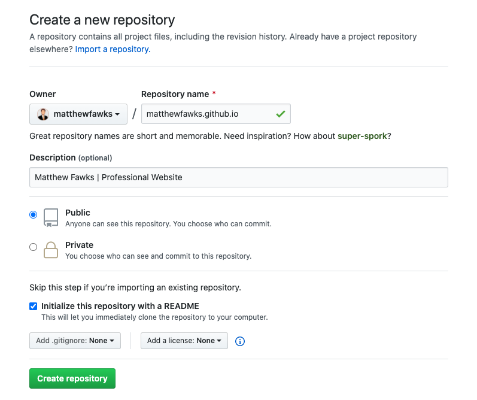
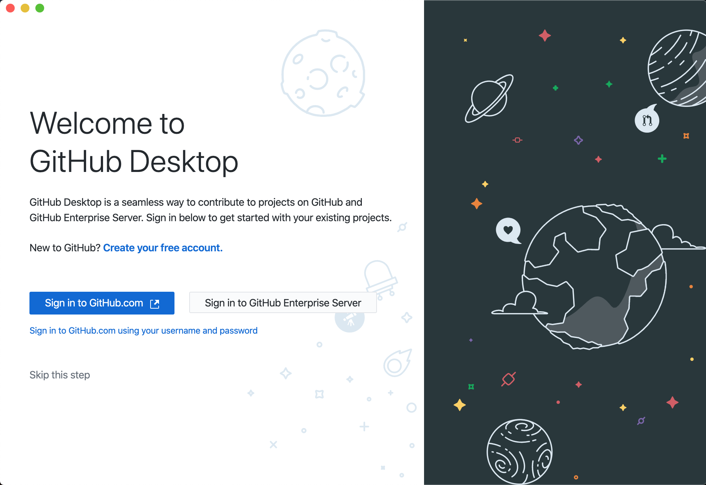
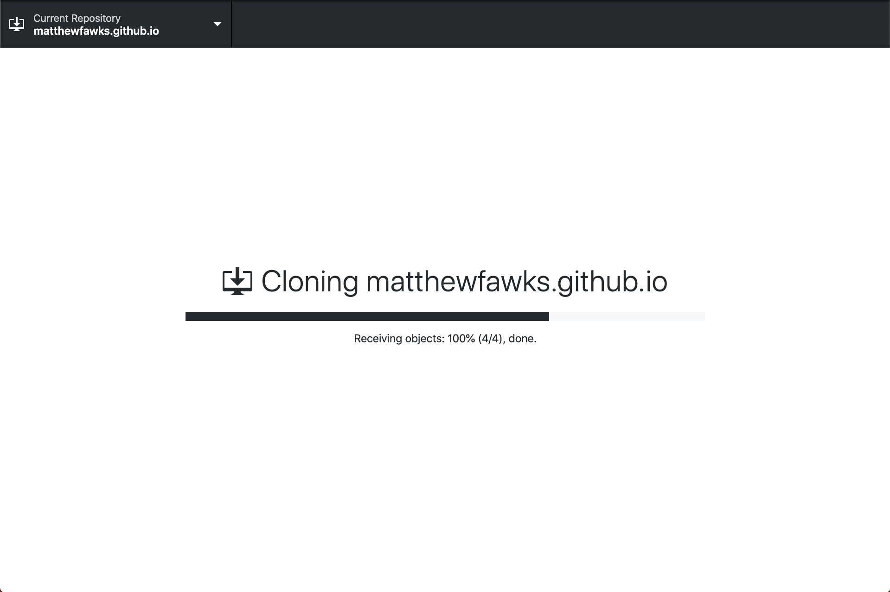
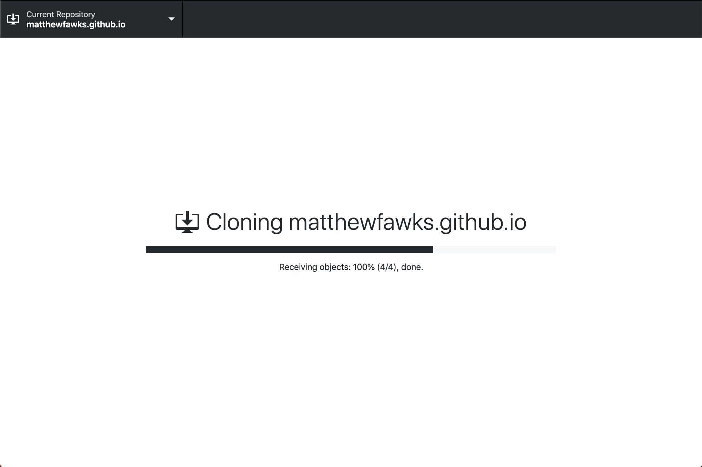

How to Build Your Own Website
Step-by-Step Guide
Step 1 - Set Up the Hosting Environment
stage introduction
Step 1.1 - Sign Up for GitHub
Head over to github.com
Choose the free plan as there is no need for a paid plan for this and, for that matter, most other non-professional uses. What you decide on the “Tailor you experience” part of signing up is completely up to you and what you would like to put.
After you have made it past these sign-up steps, go check and verify your email and move on to the next step!
Step 1.2 - Create GitHub Repository
To create the spot where we will be putting the code for your website, you will need to create a new “repository” (this is slightly different than a project, so make sure you click the correct one). To do so, go to the upper right-hand corner of the page, click the “+” button and “New repository.”

Getting this next step correct is very import for getting your site connected correctly. For your repository name, make sure you name your project exactly “YOURUSERNAME.github.io”. For example, if your username is “billgates” your repository name should be “billgates.github.io”. This tells GitHub that you are creating a webpage for your project. Accordingly, GitHub only allows a user to have one repository in this way. Check the box for "Initialize with a README".
Your "Code" tab should now look like this.

Step 1.3 - Install GitHub Desktop
While you could certainly work out of your repository directly on GitHub’s website, this would become quite tedious as you try to create and update your website code. To download, head to GitHub Desktop and download the correct one for your OS (this is currently available for Mac or Windows, but not Linux).

Click "Sign in to GitHub.com" and sign in with the information that you just created in Step 1.1. This option will redirect you to your browser to more quicky sign in if you are already signed in on your browser. You could instead manually sign in using your username and password by choosing "Sign in to GitHub.com using your username and password".
Step 1.4 - Clone Your Repository to Your Desktop
you can pull directly from github after signing in

Alternatively, within the GitHub website, you are going to want to set up in your desktop by clicking on the “Code” tab, click “Clone or download”, and click “Open in Desktop”. Your browser should launch GitHub Desktop (or ask you to launch GitHub Desktop in which you would just click “Yes” in your browser).


Regardless of which way you do it, a window should then pop up on GitHub Desktop that pre-fills your Repository URL and a Local Path. Feel free to change your local path if you would like to save it somewhere handy, like your Documents folder, for example.
 Click Clone and it will clone the repository to your computer at the path you chose.

Click Clone and it will clone the repository to your computer at the path you chose.

After cloning, it should open to something that looks mostly like this.

Now you are ready to move on to the second stage, but keep all of this available as we will circle back to it shortly after the next stage! Note that you could technically skip Stages 2 and 3 and come back to it after setting up your site as you will still be able to view your site by typing “YOURUSERNAME.github.io” in the URL part of your browser. Do this if you are unsure of you want to commit to purchasing a domain name already or just want to make sure you can get it to work beforehand.
stage conclusion/aternatives -> [potential alternatives to GitHub -> While GitHub is… AS you may notice on the next stage, Namecheap offers hosting…]